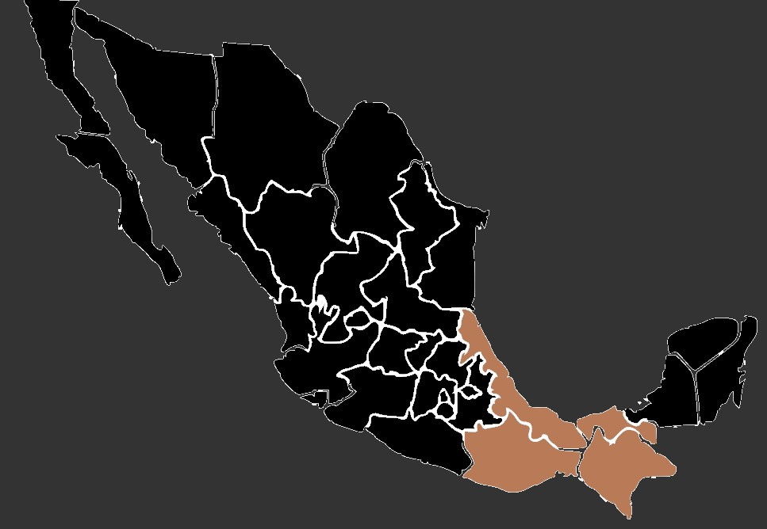

El escarabajo rinoceronte es uno de los insectos más grandes del mundo, con una longitud que puede variar entre 2 y 13 centímetros, dependiendo de la especie. Su cuerpo robusto y ovalado está cubierto por un exoesqueleto resistente y brillante.
Cuernos: La característica más distintiva del escarabajo rinoceronte son los cuernos que se proyectan desde su cabeza. Los machos suelen tener cuernos notables, similares a los de los rinocerontes, que utilizan en competencias por apareamiento y para defender su territorio. Las hembras también pueden tener cuernos, pero generalmente son más pequeños o están ausentes.
Color: Su coloración varía desde tonos marrones, negros o incluso grises. Algunas especies muestran patrones llamativos, como manchas, rayas o protuberancias en su caparazón, que pueden ser de diferentes tonalidades.
Cabeza: Su cabeza es ancha y a menudo está equipada con mandíbulas poderosas que les permiten masticar madera y otros materiales duros. Estas mandíbulas pueden ser utilizadas para defenderse o para el corte de alimentos.
Patas: Tienen patas fuertes y robustas que les permiten excavar y trepar con facilidad. Aunque su vuelo es limitado, son capaces de volar distancias cortas, pero principalmente se desplazan caminando o volando en cortas distancias.
Cuernos: La característica más distintiva del escarabajo rinoceronte son los cuernos que se proyectan desde su cabeza. Los machos suelen tener cuernos notables, similares a los de los rinocerontes, que utilizan en competencias por apareamiento y para defender su territorio. Las hembras también pueden tener cuernos, pero generalmente son más pequeños o están ausentes.
Color: Su coloración varía desde tonos marrones, negros o incluso grises. Algunas especies muestran patrones llamativos, como manchas, rayas o protuberancias en su caparazón, que pueden ser de diferentes tonalidades.
Cabeza: Su cabeza es ancha y a menudo está equipada con mandíbulas poderosas que les permiten masticar madera y otros materiales duros. Estas mandíbulas pueden ser utilizadas para defenderse o para el corte de alimentos.
Patas: Tienen patas fuertes y robustas que les permiten excavar y trepar con facilidad. Aunque su vuelo es limitado, son capaces de volar distancias cortas, pero principalmente se desplazan caminando o volando en cortas distancias.
Estos escarabajos suelen habitar en zonas tropicales y subtropicales, donde se alimentan de frutas, savia, hojas y, en algunos casos, madera en descomposición. Son principalmente nocturnos y se esconden durante el día bajo troncos, hojas o en el suelo.
Aunque a menudo se los considera plagas en áreas agrícolas debido a su capacidad para dañar cultivos, descomponen materia orgánica y juegan un papel crucial en los ecosistemas al contribuir al proceso de descomposición y reciclaje de nutrientes.
El escarabajo rinoceronte se encuentra en varias regiones de México, principalmente en áreas tropicales y subtropicales. Algunos estados donde se puede hallar esta especie y otras variedades de escarabajos rinoceronte son Chiapas, Veracruz, Oaxaca y Tabasco.
Aunque a menudo se los considera plagas en áreas agrícolas debido a su capacidad para dañar cultivos, descomponen materia orgánica y juegan un papel crucial en los ecosistemas al contribuir al proceso de descomposición y reciclaje de nutrientes.
El escarabajo rinoceronte se encuentra en varias regiones de México, principalmente en áreas tropicales y subtropicales. Algunos estados donde se puede hallar esta especie y otras variedades de escarabajos rinoceronte son Chiapas, Veracruz, Oaxaca y Tabasco.
 El escarabajo rinoceronte es generalmente herbívoro y se alimenta de una variedad de materiales orgánicos, aunque la dieta específica puede variar entre especies y etapas de su vida. Sus fuentes de alimentación pueden incluir frutas o sabia.
Se sabe que consumen hojas y otros materiales vegetales. Algunas especies pueden preferir ciertos tipos de hojas o plantas. Algunos escarabajos rinoceronte se alimentan de madera en descomposición, contribuyendo al proceso de descomposición y reciclaje de nutrientes en los ecosistemas forestales. Además, estos escarabajos pueden ingerir otros materiales orgánicos en descomposición, como restos de animales o excrementos.
Se sabe que consumen hojas y otros materiales vegetales. Algunas especies pueden preferir ciertos tipos de hojas o plantas. Algunos escarabajos rinoceronte se alimentan de madera en descomposición, contribuyendo al proceso de descomposición y reciclaje de nutrientes en los ecosistemas forestales. Además, estos escarabajos pueden ingerir otros materiales orgánicos en descomposición, como restos de animales o excrementos.
• Los machos tienen cuernos notables, pero estos no están hechos de hueso, sino de quitina, el mismo material que compone su exoesqueleto. Estos cuernos pueden llegar a representar hasta un tercio de la longitud total del escarabajo y son utilizados en luchas por el apareamiento y la defensa del territorio.
• A pesar de su tamaño, los escarabajos rinoceronte son increíblemente fuertes. Se ha informado que tienen la capacidad de levantar objetos que son hasta 850 veces más pesados que ellos mismos, gracias a sus potentes mandíbulas.
• Algunas especies de escarabajos rinoceronte pueden tener una vida útil bastante prolongada en comparación con otros insectos. Algunos individuos pueden vivir entre 2 y 3 años, lo que es relativamente largo para un insecto.
• Por su tamaño imponente, belleza y singularidad, los escarabajos rinoceronte son muy valorados por los coleccionistas de insectos. Algunas especies raras o con características únicas pueden ser objeto de gran interés y alcanzar precios elevados en el mercado de colección.
• A pesar de su tamaño, los escarabajos rinoceronte son increíblemente fuertes. Se ha informado que tienen la capacidad de levantar objetos que son hasta 850 veces más pesados que ellos mismos, gracias a sus potentes mandíbulas.
• Algunas especies de escarabajos rinoceronte pueden tener una vida útil bastante prolongada en comparación con otros insectos. Algunos individuos pueden vivir entre 2 y 3 años, lo que es relativamente largo para un insecto.
• Por su tamaño imponente, belleza y singularidad, los escarabajos rinoceronte son muy valorados por los coleccionistas de insectos. Algunas especies raras o con características únicas pueden ser objeto de gran interés y alcanzar precios elevados en el mercado de colección.